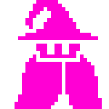

The game will use DOM Adventure as a base to make a simple dungeon crawler in javascript. However, I'm also going to add some basic story elements explaining why you're on your quest, menus, enemy movement based on when you move, along with at least one more level.
Top-down dungeon crawler
Desktop
The story is a basic fantasy one, a mage must venture into a dungeon that is the resting place of a former great hero of the land in order to grab his legendary gear.
I'm going to try to go for a pixel art style based on simple computer games from the 80s and 90s. A good example of my idea is a style similar to The Oregon Trail, back background, limited use of colors, and of course pixelated. I will be creating all sprites by myself and here is an example of the style I'm going for.
The player will have five controls: moving up/down/left/right and an attack control, either firing a fireball or a slash of a knife depending on who I make the player character. There will be a breif explaination screen to show the player how to play the game.
The program I am using to make sprites is called Aesprite.
I'm Gavin Arthur Kerrigan, second year Game Design and Development major here at RIT. My favorite game genre are RPGS and love fantasy stories, which you could probably tell considering the game I'm making.
The process for this project started with coming up with the basic idea I stated in the propsal above, but as the project went on, it got altered. Originally I wanted to make a more Zelda like dungeon crawler but I think the final product is more of a puzzle game than anything with the idea of having the enemies move only when the player does. When I got that implemented I had more time so I added more levels and made some new sprites and the story screen.
Everyhting should be hit from the requirments. It does enough different to make it very different from the base code, shouldn't have any errors, everything was on time, and the majority of the code is mine and the code that isn't is HEAVILY altered from the original code.
I made the sprites myself using Aesprite. Audio from OpenGameArt.org. The custom font is from Google Fonts